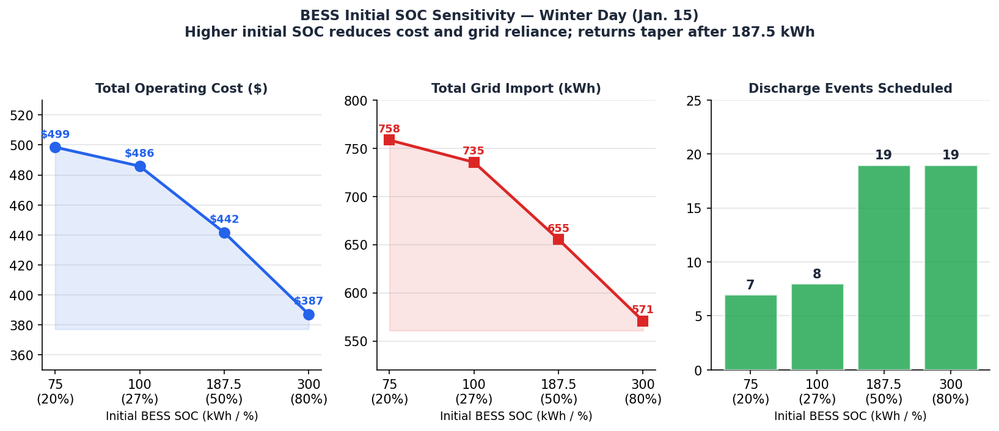

Gaussian-Copula-Driven Stochastic MILP for Day-Ahead Economic Dispatch of a Thermal-Led Microgrid
Dependence-Aware Scenario Generation • Rank-Structured Gaussian Copula • Stochastic MILP • Tok School, Alaska
Innovation Snapshot
This work builds a Gaussian-copula-driven stochastic MILP for day-ahead economic dispatch of a CHP–PV–BESS microgrid in sub-arctic Alaska. The core innovation is a scenario engine that simultaneously preserves same-hour electric–thermal dependence (Kendall's τ → ρ mapping) and within-series temporal correlation (Toeplitz structures), producing joint 24-hour trajectories that reflect realistic coincident-peak conditions — something independent-marginal approaches systematically miss.
(winter)
(winter)
(winter)
Rank-Struct. GC
6.3% over deterministic
Dependence-Aware Dispatch Framework

Gaussian-Copula Scenario Engine
A rank-based Gaussian copula is calibrated from historical PIT-transformed demand data. Same-hour electric–thermal dependence is encoded via Kendall's τ → Gaussian-copula ρ at each hour h. Within-series temporal structure is captured using Toeplitz correlation matrices (lag-one parameterisation). The final PSD correlation matrix is a blend of the structured baseline and empirical PIT correlation, projected to the nearest positive semidefinite matrix. 1,000 joint 24-hour trajectory pairs are sampled and mapped back through fitted quantile functions.
Three copula constructions benchmarked:
- Rank-Structured GC — lowest fidelity error, adopted for dispatch (MAE = 0.0243)
- IFM GC — Ledoit–Wolf shrinkage on score covariance (MAE = 0.0318)
- Kronecker GC — block-structured parameterisation (MAE = 0.0858)
Stochastic MILP Formulation
Objective: Minimise expected daily operating cost across S scenarios — comprising CHP fuel costs, time-varying grid import tariffs ($0.55/kWh), a convex piecewise battery degradation proxy, and thermal feasibility penalties for unmet or surplus heat.
Key constraints:
- Electric power balance (per hour, per scenario)
- Thermal adequacy via non-negative slack variables s+ / s−
- CHP thermal-led coupling: thermal and electric outputs linked through fixed efficiencies (ηth = 0.60, ηe = 0.25)
- BESS SOC recursion, energy & power bounds, charge/discharge exclusivity
- Grid import big-M gating; simultaneous import/export prohibited
Solver: Pyomo 6.7 + CBC 2.10 (open-source)
Case Study: Tok School Microgrid, Alaska

Tok School in Tok, Alaska is a remote, sub-arctic campus with no connection to the statewide Railbelt grid. Space-heating demand dominates year-round — making this a prototypical thermal-led microgrid where dispatch decisions are fundamentally constrained by heat requirements. The research was conducted in collaboration with the U.S. Department of Energy and GE Vernova.
| Parameter | Value |
|---|---|
| Facilities served | School (17,000 ft²), Greenhouse (1,000 ft²), Hockey Rink (3,100 ft²) |
| CHP — thermal / electric capacity | 288 kW / 120 kW (max fuel 480 kW) |
| CHP efficiencies (thermal / electric) | 0.60 / 0.25 |
| Rooftop PV | 51 kW |
| BESS — energy / power | 375 kWh / 187.5 kW charge–discharge |
| BESS SOC bounds | 10%–80% (37.5–300 kWh) |
| Grid import tariff | $0.55/kWh (no export credit) |
| Fuel cost | $0.05/kWh (biomass) |
Operational Challenge
Ignored Dependence Structure
In a cold-climate microgrid, electric and thermal loads move together — a cold snap simultaneously drives heating and lighting demand. Historical data shows a same-hour Pearson correlation of ρ(E,T) ≈ 0.976 in winter. Conventional dispatch models that treat electric and thermal loads as independent random variables fail to reproduce this coupling, generating scenario bundles that understate coincident peak conditions and lead to overly optimistic dispatch decisions.
Consequences for Dispatch Quality
Ignoring dependence causes two compounding problems: (1) Scenarios miss realistic worst-case joint peaks, so the optimiser undercommits CHP and reserves insufficient BESS capacity — leading to excessive and unplanned grid imports at peak-tariff hours. (2) Underestimated coincident stress leads to shallow, scattered BESS discharge cycles rather than targeted deep discharges at the true peak — inflating cycle count and degradation cost.
What this paper solves: A Gaussian-copula scenario engine is constructed that embeds the full electric–thermal dependence structure — same-hour coupling at every hour h and within-series temporal correlation — so the stochastic MILP hedges against realistic joint-peak scenarios rather than statistically average ones.
Core Technical Contributions
1. Rank-Structured Gaussian Copula
Calibrated from historical PIT-transformed demand data. Same-hour dependence encoded via Kendall's τ → ρ conversion at each of the 24 scheduling hours. Temporal structure enforced via Toeplitz lag-one templates. Final correlation matrix projected to nearest PSD matrix before sampling.
2. Preserved Temporal Correlation
Within-series temporal correlation is preserved for both electric (lag-1 AR ≈ 0.862 winter, 0.904 summer) and thermal series independently, preventing scenario pathways from being physically implausible hour-to-hour transitions.
3. Two-Sided Thermal Feasibility Slacks
Thermal balance is enforced via non-negative slack variables for both unmet heat (s−) and surplus heat (s+), each penalised asymmetrically in the objective. This eliminates the "run-hot" bias of one-sided penalty formulations without requiring a rigid thermal equality.
4. Convex Piecewise Degradation Proxy
BESS degradation cost is modelled as a convex piecewise function of depth and throughput, making cycle-depth-dependent wear costs tractable within the MILP. This prevents the optimiser from making unrealistically deep discharge decisions that would be invalidated by accurate degradation accounting.
5. Three-Way Copula Benchmark
Rank-Structured, IFM (Ledoit–Wolf shrinkage), and Kronecker-structured Gaussian copulas are compared using dependence-fidelity metrics (overall correlation MAE and E–T block MAE) against empirical PIT correlations. The benchmark provides a principled model selection criterion rather than an ad-hoc choice.
6. VSS and SOC Sensitivity Analysis
Value of the Stochastic Solution (VSS) quantifies the expected-cost advantage of scenario-based scheduling over forecast-only deterministic dispatch. An initial-SOC sensitivity (75–300 kWh) demonstrates diminishing returns once BESS power limits bind — a practical insight for microgrid planning and battery sizing decisions.
Model Validation — Dependence Fidelity

| Copula Model | Overall Correlation MAE(ρ) | E–T Block MAE(ρ) | Adopted for Dispatch? |
|---|---|---|---|
| Rank-Structured GC | 0.0243 | 0.0270 | ✓ Yes — lowest error |
| IFM GC (Ledoit–Wolf shrinkage) | 0.0318 | 0.0397 | No |
| Kronecker GC | 0.0858 | 0.1068 | No — under-fits E–T clusters |
Scenario Calibration — Winter
- P10–P90 marginal coverage: 91.7% (E), 95.8% (T)
- Average band width: 6.727 kWh (E), 6.403 kWh (T)
- Same-hour correlation ρ(E,T): 0.976
- Cross-lag ρ(E→T, T→E): 0.848, 0.835
- Temporal AR(1) mean: 0.862 (both series)
Scenario Calibration — Summer
- P10–P90 marginal coverage: 92.8% (E), 95.8% (T)
- Average band width: 5.391 kWh (E), 2.714 kWh (T)
- Same-hour correlation ρ(E,T): 0.936 / 0.946
- Cross-lag ρ(E→T, T→E): 0.878, 0.855
- Temporal AR(1) mean: 0.904 (both series)
Operational Impact
Why these improvements occur: Dependence-preserving copula scenarios expose realistic coincident electric–thermal peaks that independent-marginal scenarios systematically understate. The optimizer responding to these joint-stress scenarios commits CHP and BESS resources more strategically — specifically, it schedules shallower but more precisely timed BESS discharges (reducing degradation) and pre-positions dispatch decisions to avoid expensive peak-hour grid imports.

Copula vs. Independent Marginals — Operational Summary
| Metric | Independent (Winter) | Copula (Winter) | Δ Winter | Independent (Summer) | Copula (Summer) | Δ Summer |
|---|---|---|---|---|---|---|
| Worst-case daily cost ($) | 2,010 | 1,847 | −8.1% | 404.92 | 387.74 | −4.2% |
| Total grid import (kWh) | 3,030 | 2,942 | −2.9% | 599.89 | 570.88 | −5.1% |
| BESS degradation cost ($) | 9.60 | 6.81 | −29.1% | 8.64 | 6.55 | −24.2% |
Winter cost decomposition (worst-case copula scenario): Total = $1,847.40 | Fuel cost: $222.32 | Grid import cost: $1,618.27 | BESS degradation: $6.81.
Robustness Insights

Initial SOC Sensitivity Summary
| Initial SOC (kWh) | Total Cost ($) | Grid Import (kWh) | Discharge Events |
|---|---|---|---|
| 75 (20%) | 498.52 | 758.37 | 7 |
| 100 (27%) | 485.87 | 735.37 | 8 |
| 187.5 (50%) | 441.61 | 655.37 | 19 |
| 300 (80%) | 387.14 | 570.79 | 19 |
Value of the Stochastic Solution (VSS)
VSS measures the expected-cost advantage of scenario-based stochastic scheduling over a deterministic baseline (single-forecast trajectory). VSS is positive in both seasons, confirming the practical value of uncertainty-aware dispatch:
| Season | Deterministic Cost ($) | Stochastic Cost ($) | VSS ($) | VSS (%) |
|---|---|---|---|---|
| Winter (Jan. 15) | 1,905 | 1,785 | 120 | 6.30% |
| Summer (Jun. 21) | 385 | 372 | 13 | 3.38% |
Tools & Implementation
Optimization & Modeling Stack
- Python 3.11
- Pyomo 6.7 — algebraic MILP modeling
- CBC 2.10 — open-source MILP solver
- SciPy / statsmodels — marginal distribution fitting, KS validation
- NumPy / Pandas — data wrangling, scenario management
- Matplotlib — dispatch stack and scenario visualization
Data Sources
- NREL NSRDB — hourly irradiance, Tok, AK (63.3°N)
- NREL building energy data — calibrated hourly electric and thermal demand profiles
- Clarkson University / DOE project — metered campus load data
- GE Vernova — CHP device parameters and fuel curves
- NREL ATB 2023 — BESS capital and degradation cost assumptions
Journal Paper — Under Review
"Gaussian-Copula-Driven Stochastic Modeling for Economic Dispatch of a Thermal-Led Microgrid in Cold Climate"
Authors: Kazi Z. Mostofa, Yazhou "Leo" Jiang
Affiliation: Electrical & Computer Engineering, Clarkson University, Potsdam, NY
Venue: Electric Power Systems Research (Elsevier)
Keywords: Gaussian copula • correlated uncertainties • electric-thermal demand coupling • scenario-based optimization • resilient economic dispatch • thermal-led microgrids